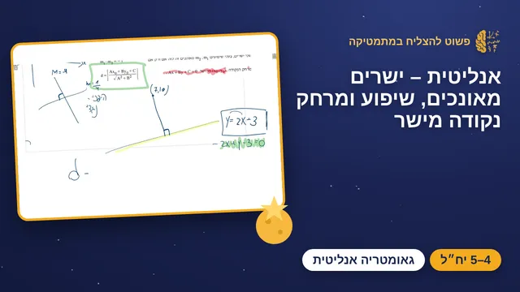
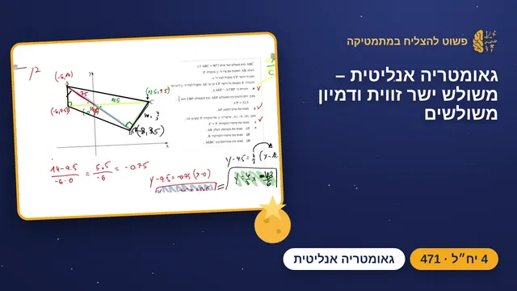
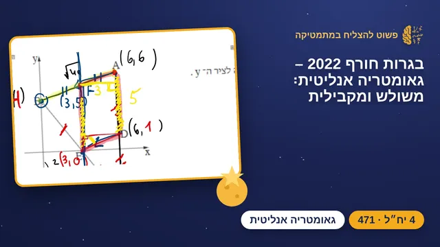
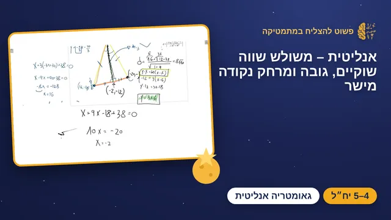
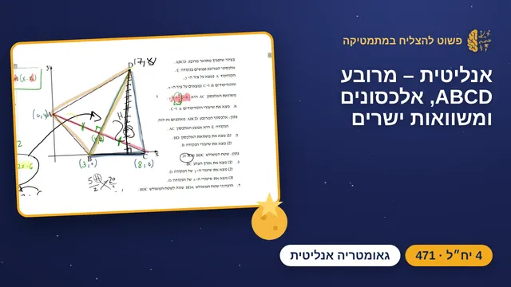
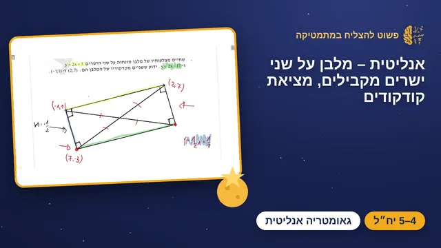
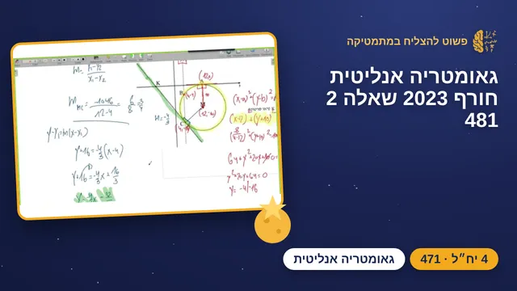

פשוט להצליח במתמטיקה › כל הנושאים › גאומטריה אנליטית
גאומטריה אנליטית – סרטוני הסבר ותרגול
38 סרטוני הסבר ותרגול בנושא גאומטריה אנליטית – לשאלון 371, שאלון 471, שאלון 571, שאלון 572. כל נושא מוסבר מהקל אל הקשה: קודם הרעיון, אחר כך תרגילים, ובסוף שאלות בסגנון בגרות. הכול בחינם, בשיטת "פשוט להצליח".
רוצים לעקוב אחרי ההתקדמות?נרשמים בחינם, וכל סרטון שראיתם מסומן ✓. ממשיכים מכל מכשיר.
הצטרפות בחינם ←גאומטריה אנליטית – שאלון 371 כל הנושאים של שאלון 371 ←
 מרובע במערכת צירים – שיפוע, משוואת ישר וחיתוך עם הצירים
מרובע במערכת צירים – שיפוע, משוואת ישר וחיתוך עם הצירים גאומטריה אנליטית – נוסחאות, כלי העבודה ומשמעותם
גאומטריה אנליטית – נוסחאות, כלי העבודה ומשמעותם גאומטריה אנליטית – הסבר נוסחאות ופתרון תרגיל בגרות 3 יח
גאומטריה אנליטית – הסבר נוסחאות ופתרון תרגיל בגרות 3 יח גאומטריה אנליטית – נוסחאות ושאלות
גאומטריה אנליטית – נוסחאות ושאלותגאומטריה אנליטית – שאלון 471 כל הנושאים של שאלון 471 ←
 אנליטית – טרפז שווה שוקיים, מציאת הקודקוד הרביעי
אנליטית – טרפז שווה שוקיים, מציאת הקודקוד הרביעי
אנליטית – ישרים מאונכים, שיפוע ומרחק נקודה מישר אנליטית – דלתון꞉ מציאת קודקודים ומשולשים חופפים
אנליטית – דלתון꞉ מציאת קודקודים ומשולשים חופפים שיפוע וזווית – tanα=m
שיפוע וזווית – tanα=m מעוין ABCD במערכת צירים – אלכסונים, שטח וזווית
מעוין ABCD במערכת צירים – אלכסונים, שטח וזווית
גאומטריה אנליטית – משולש ישר זווית ודמיון משולשים
בגרות חורף 2022 – גאומטריה אנליטית꞉ משולש ומקבילית
אנליטית – משולש שווה שוקיים, גובה ומרחק נקודה מישר
אנליטית – מרובע ABCD, אלכסונים ומשוואות ישרים
אנליטית – מלבן על שני ישרים מקבילים, מציאת קודקודיםמרובע במערכת צירים – שיפוע, משוואת ישר וחיתוך עם הצירים תרגילי אנליטית תחילת כיתה י – כל הנוסחאות ב-2 דקות 2
תרגילי אנליטית תחילת כיתה י – כל הנוסחאות ב-2 דקות 2 תרגילי אנליטית תחילת כיתה י – כל הנוסחאות ב-2 דקות 1
תרגילי אנליטית תחילת כיתה י – כל הנוסחאות ב-2 דקות 1 תרגיל אנליטית תחילת כיתה י מדהים
תרגיל אנליטית תחילת כיתה י מדהים אנליטית מרובעים 471
אנליטית מרובעים 471 אנליטית עם גאומטריה 471 השאלון החדש – שאלה פשוטה וטובהגאומטריה אנליטית – נוסחאות, כלי העבודה ומשמעותם
אנליטית עם גאומטריה 471 השאלון החדש – שאלה פשוטה וטובהגאומטריה אנליטית – נוסחאות, כלי העבודה ומשמעותם שאלת אנליטית ברמה גבוהה שמקיפה את כל החומר 481 יא 4 יחגאומטריה אנליטית בגרות חורף 2014 שאלה 2 4 יח 481גאומטריה אנליטית 481 שאלת בגרותגאומטריה אנליטית – פתרון 2 שאלות בגרות 481אנליטית עם גאומטריה – שאלות עבודה פתורות 3
שאלת אנליטית ברמה גבוהה שמקיפה את כל החומר 481 יא 4 יחגאומטריה אנליטית בגרות חורף 2014 שאלה 2 4 יח 481גאומטריה אנליטית 481 שאלת בגרותגאומטריה אנליטית – פתרון 2 שאלות בגרות 481אנליטית עם גאומטריה – שאלות עבודה פתורות 3 אנליטית עם גאומטריה – שאלות עבודה פתורות 1אנליטית עם גאומטריה – שאלות עבודה פתורות 2
אנליטית עם גאומטריה – שאלות עבודה פתורות 1אנליטית עם גאומטריה – שאלות עבודה פתורות 2 כיתה י משולש שווה שוקיים ודלתון – גאומטריה עם אנליטית, תרגילים פתורים
כיתה י משולש שווה שוקיים ודלתון – גאומטריה עם אנליטית, תרגילים פתורים חורף 2021 נבצרים שאלת בגרות אנליטית שאלה 2 שאלון 481גאומטריה אנליטית – הסבר כל החומר והנוסחאות 481 כולל הקשר לגאומטריה
חורף 2021 נבצרים שאלת בגרות אנליטית שאלה 2 שאלון 481גאומטריה אנליטית – הסבר כל החומר והנוסחאות 481 כולל הקשר לגאומטריה משולש ישר זווית בגאומטריה אנליטית 471 כיתה י – שאלות פתורותשטח משולש בגאומטריה אנליטית 471 כיתה י – שאלות פתורות
משולש ישר זווית בגאומטריה אנליטית 471 כיתה י – שאלות פתורותשטח משולש בגאומטריה אנליטית 471 כיתה י – שאלות פתורות גאומטריה אנליטית קיץ 2022 מועד ב שאלה 2 481
גאומטריה אנליטית קיץ 2022 מועד ב שאלה 2 481
גאומטריה אנליטית חורף 2023 שאלה 2 481תרגיל 28 עמ' 50 (יואל גבע) 471 כיתה י – אנליטית עם גאומטריהתרגיל 33 עמ' 43 (יואל גבע) 471 כיתה י – אנליטית עם גאומטריה גאומטריה עם אנליטית 471 כיתה י 4 יחפתרון שאלות אנליטית עם גאומטריה 481גאומטריה אנליטית – נוסחאות ושאלות
גאומטריה עם אנליטית 471 כיתה י 4 יחפתרון שאלות אנליטית עם גאומטריה 481גאומטריה אנליטית – נוסחאות ושאלותגאומטריה אנליטית – שאלון 571 כל הנושאים של שאלון 571 ←
אנליטית – טרפז שווה שוקיים, מציאת הקודקוד הרביעיאנליטית – ישרים מאונכים, שיפוע ומרחק נקודה מישרשיפוע וזווית – tanα=mאנליטית – משולש שווה שוקיים, גובה ומרחק נקודה מישראנליטית – מלבן על שני ישרים מקבילים, מציאת קודקודיםתרגילי אנליטית תחילת כיתה י – כל הנוסחאות ב-2 דקות 2תרגילי אנליטית תחילת כיתה י – כל הנוסחאות ב-2 דקות 1תרגיל אנליטית תחילת כיתה י מדהיםגאומטריה אנליטית – נוסחאות, כלי העבודה ומשמעותםאנליטית עם גאומטריה – שאלות עבודה פתורות 3אנליטית עם גאומטריה – שאלות עבודה פתורות 1אנליטית עם גאומטריה – שאלות עבודה פתורות 2כיתה י משולש שווה שוקיים ודלתון – גאומטריה עם אנליטית, תרגילים פתוריםגאומטריה אנליטית – נוסחאות ושאלות